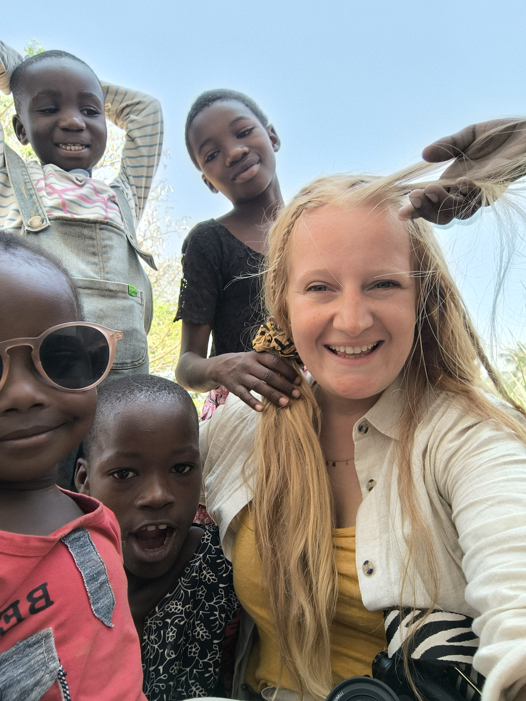
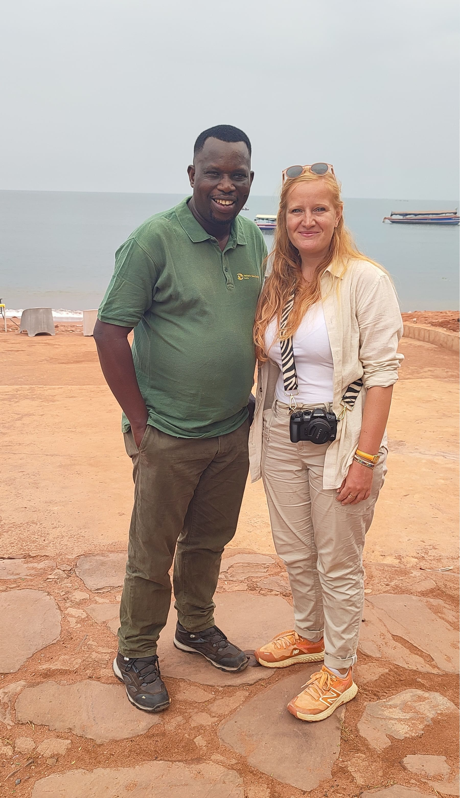
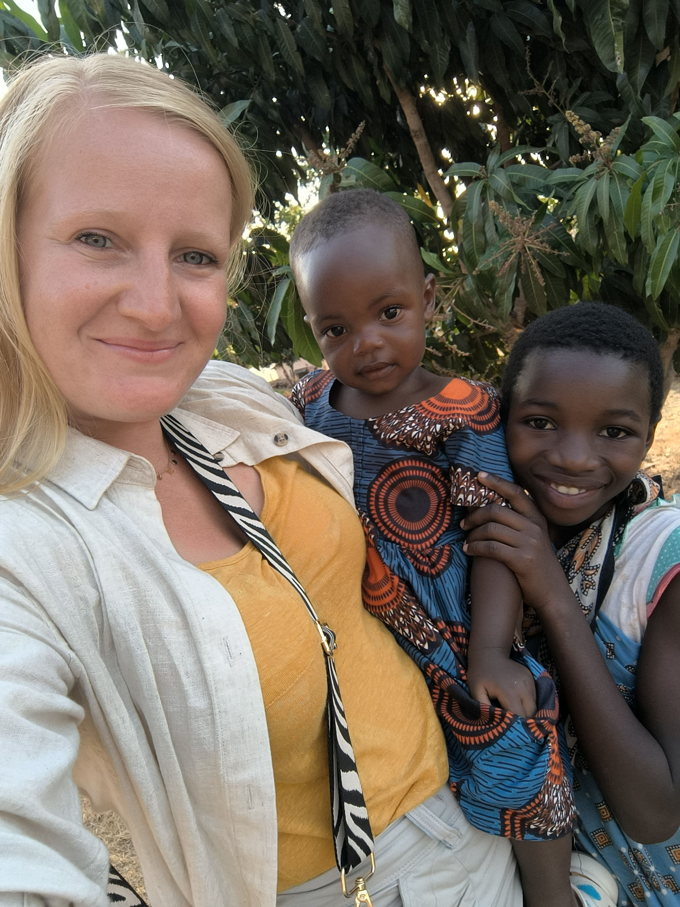

Présentation de l'association TINARA et de sa mission.

Au fil des années, mes engagements associatifs et mon soutien à différentes ONG ont nourri une conviction : la solidarité internationale doit être exigeante, responsable et durable.
Voyager a toujours été pour moi une manière d'aller à la rencontre des autres. La Tanzanie, en septembre 2025, m'a offert des paysages grandioses, des ascensions à 4 600 mètres d'altitude, des treks dans les hauts plateaux masaï, le décor du lac Tanganyika et de ses rives éclatantes. Et la Tanzanie m'a offert des rencontres.
Ce que je retiens avant tout, ce sont des visages. Des sourires. Des prénoms.
Christina et Rachel, 9 et 11 ans, ont donné son nom à l'association : Tinara.
Avec elles et les autres enfants de l'orphelinat Sanganigwa de Kigoma, j'ai partagé des rires sur un terrain de basket abîmé, un ballon à moitié gonflé, un filet déchiré. Nous parlions un mélange de français, d'anglais, de swahili et d'italien — mais surtout le langage universel des mains, des regards et des sourires.
Et puis il y a eu la rencontre avec Kenneth, directeur de l'orphelinat. Nos échanges ont transformé l'émotion en réflexion. Nous avons parlé besoins concrets, santé, éducation, stabilité. Nous avons parlé long terme.
Cette rencontre n'a pas été un moment suspendu. Elle a été un point de bascule.
C'est en Tanzanie que cette conviction a pris un visage. C'est au sein de l'orphelinat Sanganigwa que l'idée de Tinara s'est imposée comme une évidence. Cette rencontre a transformé une volonté d'aider en un engagement concret : soutenir ces enfants de manière structurée et sur le long terme.
J'ai fondé Tinara avec la conviction profonde que la solidarité internationale peut – et doit – être responsable, respectueuse et durable. Voyager m'a offert une ouverture sur l'humanité. Ces expériences ont nourri une réflexion plus large sur la manière d'agir avec justesse, sans tomber dans les écueils du syndrome du sauveur blanc. Tinara défend une approche exigeante et non néo-coloniale de l'aide internationale.


L'objectif n'est pas d'imposer des solutions extérieures, mais de travailler en partenariat étroit avec les acteurs locaux.
Nous agissons avec une ambition claire :
Chaque projet est pensé pour accompagner, et non remplacer.
À 2-3 ans, l'ambition de Tinara est de contribuer à stabiliser durablement l'orphelinat dans les domaines essentiels que sont la santé et l'éducation. L'objectif est de construire un partenariat solide, transparent et pérenne.
À terme, l'association souhaite également élargir son action à d'autres structures partageant les mêmes valeurs, tout en conservant une approche mesurée, responsable et profondément humaine.
Février 2026